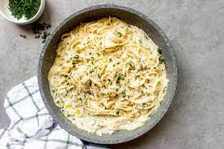

Creamy Garlic Pasta

Description
5 simple ingredients, follow some easy steps, and you've got a yummy in your tummy quick pasta!
Ingredients
- Noodles
- Garlic
- Half and half or heavy whipping cream
- Butter - we love butter
- Flour - to make it a lil' thiccc
Optional
- Parsley
- Parmesan Cheese
Steps
- Boil your noodles, make sure to set a timer to your appropriate preference of tenderness!
- Melt butter in pan.
- Once butter is melted, add in garlic and mix it for about 1 minute. Don't burn it!
- Once butter and garlic are giving off the beautiful aroma, add in flour and mix it until light golden.
- Add half and half, mixed out all of the lumps. Add salt and pepper to taste.
- Garnish with parsley and add some parmesan cheese if you'd like!